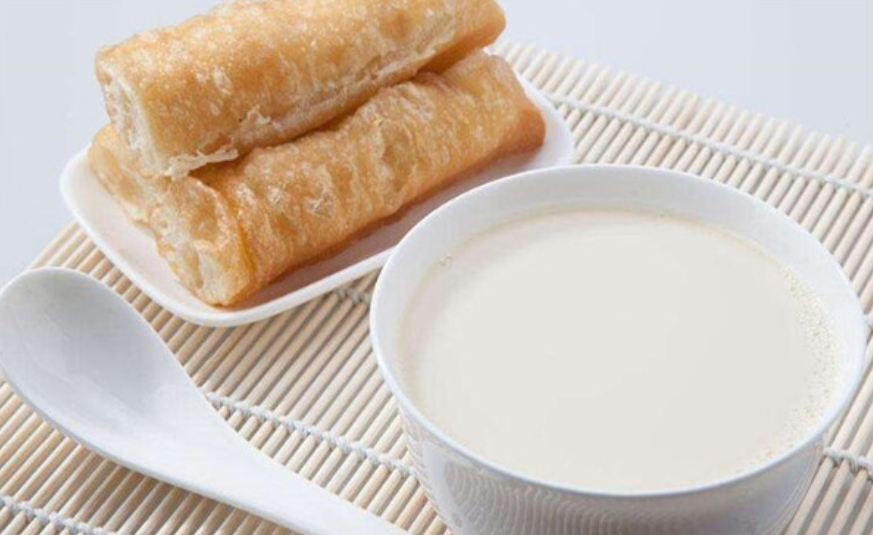
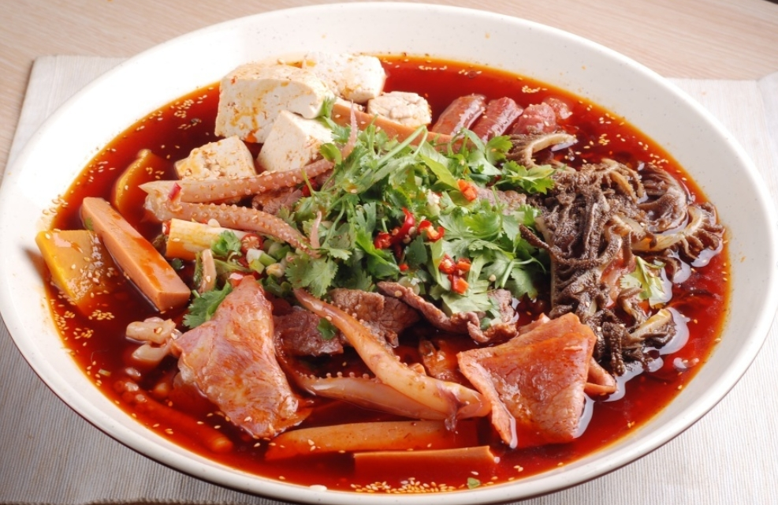
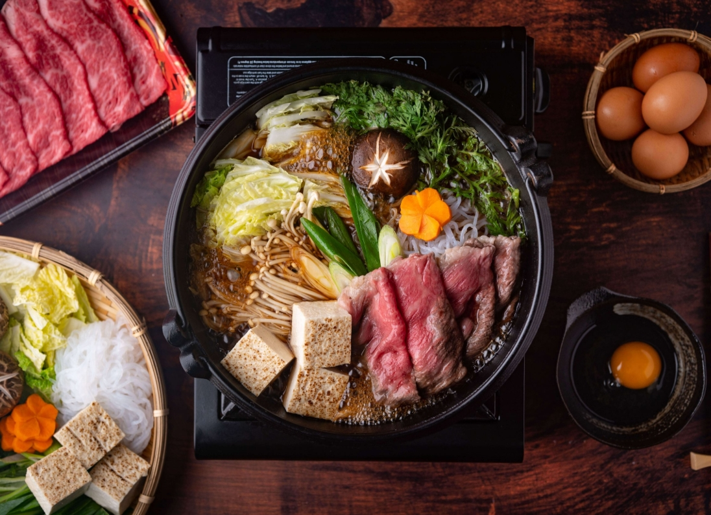
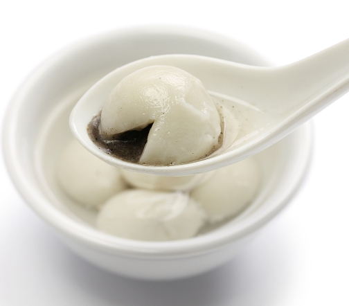
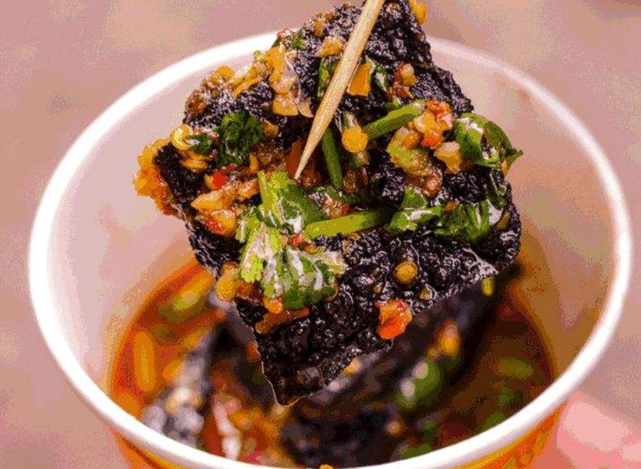

Types of Meals

Breakfast:
Most common meal is deep-fried dough sticks (yóutiáo) served with soya milk. (dòujiāng) Deep-fried dough sticks are made of flour, knead into dough, and fried in oil until crispy and golden in colour. Soya milk is made from soya beans. Often, Chinese people would dip yóutiáo into their soya milk as this gives the yóutiáo a sweet taste and slightly softer texture.

Lunch:
Chinese people consume rice or noodles for lunch. Other than that they also eat a dish called “Hot Pot for One” (mào cài). This is simply where the person chooses the ingredients they'd like e.g. tofu, meat products, mushrooms etc., and put them in a bamboo basket, and cook them in a spicy broth.

Dinner:
Hot Pot is a popular choice. Chinese people gather and cook their meats and vegetables in a simmering pot. The soup base differs depending on the group's taste. It can either be spicy or very mild.

Dessert:
Glutinous rice balls (tāngyuán) are akin to mochis. The texture is chewy, and they contain sweet fillings e.g. peanut, or black sesame. They are best served hot in a sweet broth (which is usually merely hot water with sugar added to flavour the soup).

Streetfood:
Stinky tofu (chòu dòufu) is a very controversial street food. Some Chinese people love them while some can't stand the smell. It is a fermented tofu that has a crispy, black skin with a strong odour.